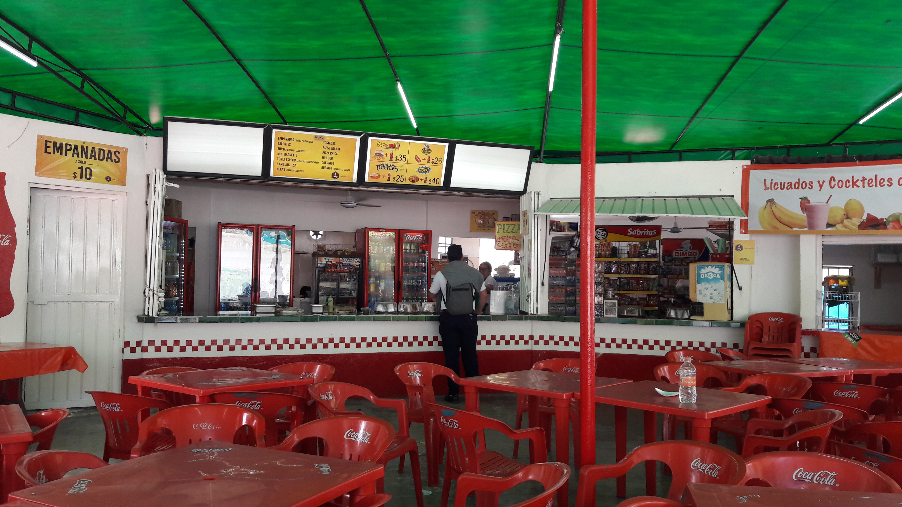

La Cafetería Las Mañanitas es una de las más antiguas del colegio. Durante la pandemia o el coronavirus, adaptó su servicio para vender comida a precios razonables y mantenerse en funcionamiento. A pesar de la distancia, sus clientes fieles seguían comprando sus deliciosos platillos. Ofrecen una variedad de opciones como sándwiches, ensaladas, y bebidas calientes.
La Cafetería Las Mañanitas fue fundada hace más de 20 años por el señor Juan Pérez. Desde entonces, ha sido uno de los lugares favoritos de los estudiantes para tomar un refrigerio o un desayuno rápido antes de clases.
Entre los platillos más populares de la Cafetería Las Mañanitas se encuentran:
La Cafetería KFB es una de las más nuevas del colegio. A diferencia de la Cafetería Las Mañanitas, ofrece una gran variedad de alimentos y tiene un personal muy carismático. Además, cuenta con servicios como apartar comida y crear platillos personalizados.
La Cafetería KFB ofrece una gran variedad de alimentos, desde desayunos hasta comidas completas. Algunos de los platillos más populares son:
Además de la variedad de alimentos, la Cafetería KFB cuenta con servicios adicionales para sus clientes: